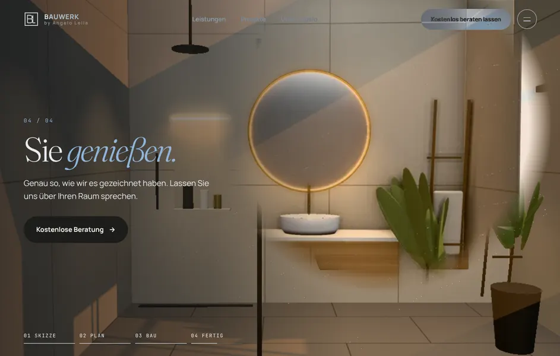
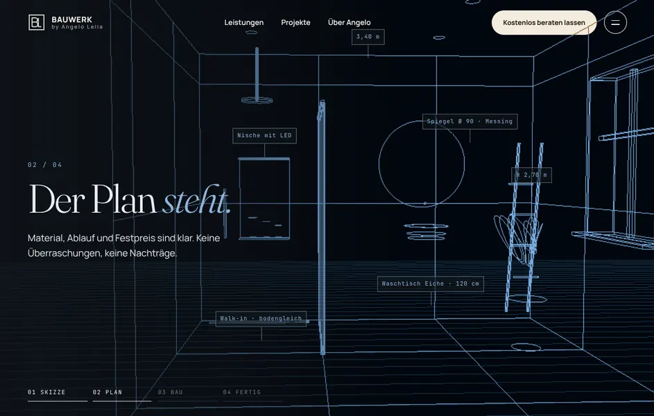
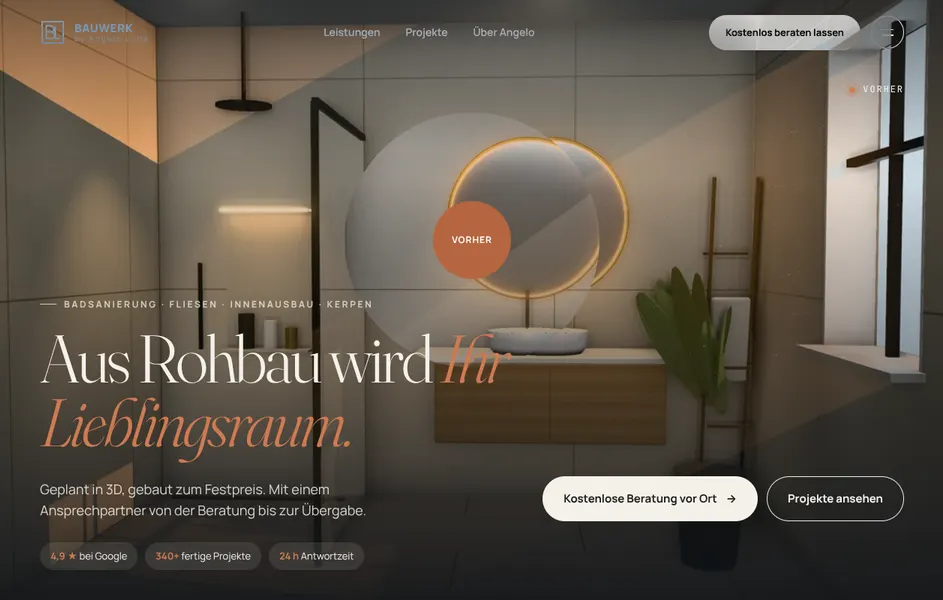
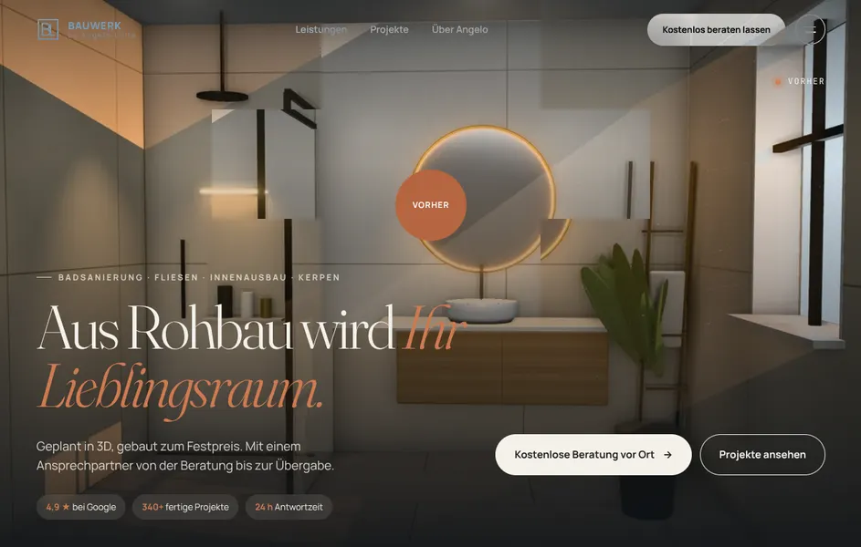
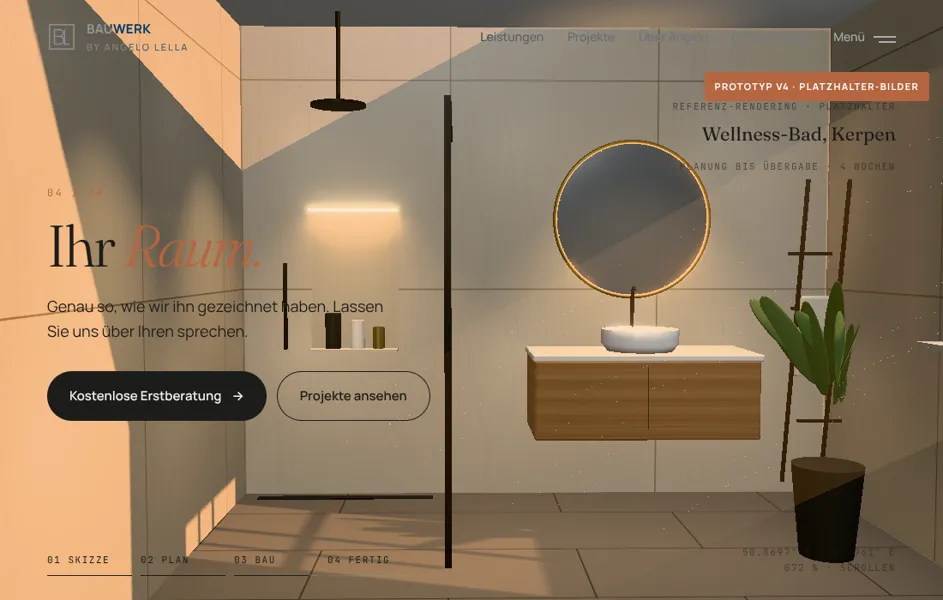
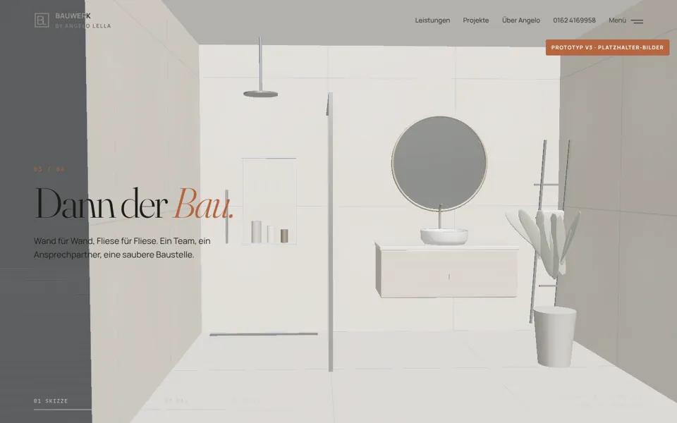
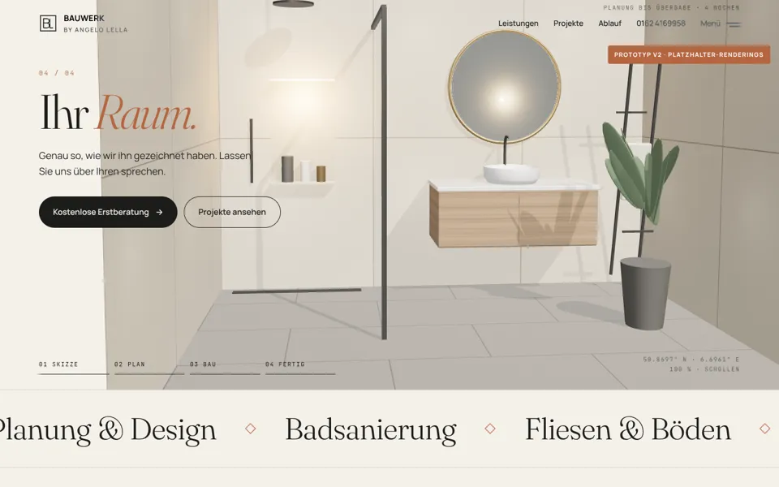
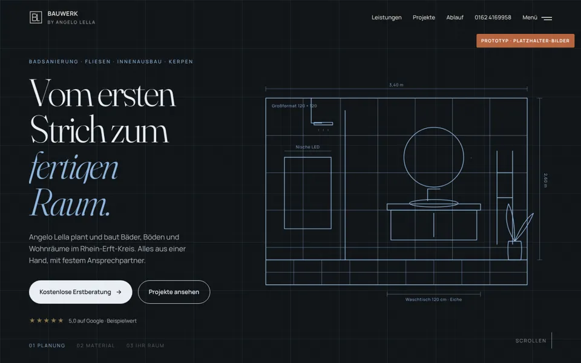

Alle Entwürfe auf einen Blick
Jede Version ist eine eigene, voll klickbare Vorschau. Die neueste steht vorne. Alle Bilder sind Platzhalter, keine echten Projektfotos.

Vom Bauplan zum echten Bad
Am Ende fährt die Kamera auf den Spiegel zu, und aus dem Spiegel öffnet sich ein echtes Foto des fertigen Bads.
Vorschau öffnen →
Vom Bauplan zum fertigen Bad
Der 3D-Teil läuft jetzt Schritt für Schritt mit dem Scrollen: Linien zeichnen, Maße, Rohbau, Material, Licht.
Vorschau öffnen →
Flüssiger, schneller, ohne Flackern
Weiche Seitenübergänge, neues Startbild mit Lupe auf den Rohbau, 3D lädt erst bei Bedarf und passt sich dem Gerät an.
Vorschau öffnen →
Mehr Verkauf, neue Animationen
Kachel-Hero vom Rohbau zum fertigen Raum, Vorher/Nachher-Wipe, Referenzen, Bewertungen, Versprechen und neue Seitenübergänge. Fotos sind Platzhalter von Unsplash.
Vorschau öffnen →
Raytracing und echtes Licht
Path-Tracing im Hero, Fenster mit Sonne und Schatten, neue Sektion „Licht ist Material“ mit vier Tageszeiten.
Vorschau öffnen →
Komplette Website, 17 Seiten
Leistungen, Projekte, Über uns, Kontakt mit Anfrage-Assistent, weiche Seitenübergänge und 3D-Hero.
Vorschau öffnen →
3D-Bad entsteht beim Scrollen
Einseitiger Prototyp: Bauzeichnung, Plan mit Maßen, Rohbau und fertiger Raum als Three.js-Szene.
Vorschau öffnen →
Erster Entwurf „Blaupause trifft Material“
Die Grundidee: Von der Bauzeichnung zum fertigen Bad, als einzelne Seite.
Vorschau öffnen →